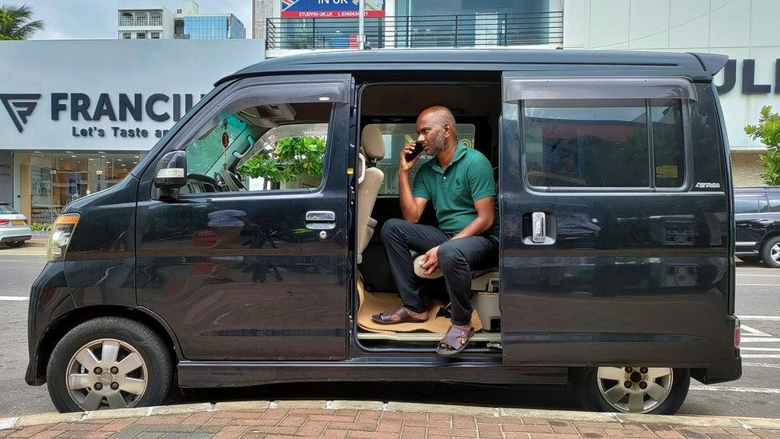
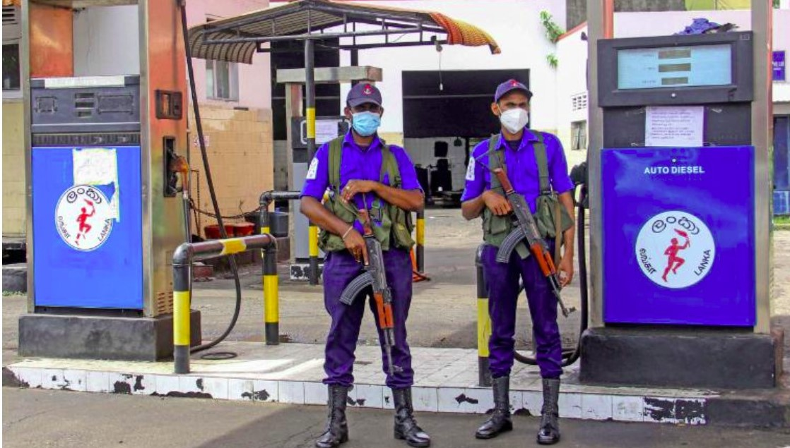

Contents
Sri Lanka fuel crisis: Waiting for days to get fuel
July 1, 2022
Being the first in the queue is usually a coveted spot, but Ajeewan Sadasivam has no idea how long he'll be stuck in this one.
"I've been in line for two days already," he says, as he waits patiently outside a petrol station in the capital Colombo.
As a taxi driver, fuel is his lifeblood, but Sri Lanka has no fresh supplies of petrol coming in.
Mr Sadasivam shows us the petrol gauge on his dashboard, the arrow hovering at empty...."I have been sleeping in this car. Sometimes I leave to go and get food, then I come back and wait… I haven't bathed in days."
He says he has no choice but to wait it out: "I have to look after my family, my wife and two children…
Sri Lanka’s Economic Nightmare Continues
June 29, 2022

As Sri Lanka’s economic nightmare continues, the country’s fuel supply is shrinking—and authorities are struggling to cope.
As fuel shortages plague the country, the government has enacted strict nationwide energy-saving measures while it searches for alternative sources. Just this week, Sri Lankan officials announced that they would ban fuel sales for private vehicles until July 10....
“Sri Lanka has never faced such a severe economic crisis in its history,” Bandula Gunawardana, the cabinet’s spokesperson, told reporters.
With no fuel and no cash, Sri Lanka grinds to a halt
July 4, 2022

Sri Lanka has less than a day’s worth of fuel left, the energy minister says, with public transport grinding to a halt as the country’s economic crisis deepens.
Power and energy minister Kanchana Wijesekera on Sunday said petrol reserves were about 4,000 tonnes, just below one day’s worth of...
The cash-strapped nation on Sunday extended school closures because there is not enough fuel for teachers and parents to get children to classrooms, with most pumping stations being without fuel for days.
As Sri Lanka runs out of fuel, doctors and bankers protest 'impossible situation'
June 30, 2022
Doctors and bankers were among hundreds of Sri Lankans who marched on Wednesday to demand the government resolve a severe fuel shortage at the heart of the Indian Ocean island's worst economic crisis in decades or step down.... “Sri Lanka has never faced such a severe economic crisis in its history,” Bandula Gunawardana, the cabinet’s spokesperson, told reporters.
Read More